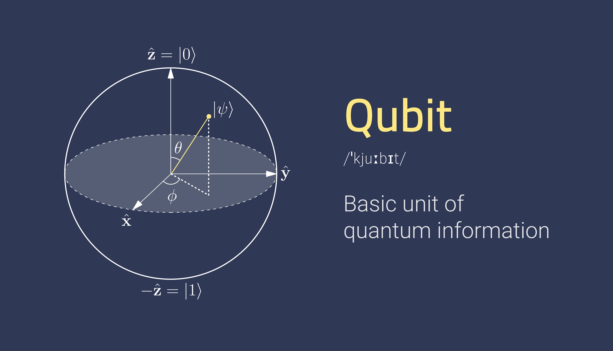

Un Qubit, cúbit (o bit cuántico) es la unidad básica de información en la
computación cuántica. Un qubit utiliza los fenómenos de superposición de
la mecánica cuántica para lograr una combinación lineal de dos estados.
Un bit binario clásico solo puede representar un único valor binario, como
0 o 1, lo que significa que solo puede estar en uno de dos estados posibles.
Sin embargo, un cúbit puede representar un 0, un 1 o cualquier proporción
de 0 y 1 en la superposición de ambos estados, con una probabilidad deter -
minada de ser un 0 y una probabilidad determinada de ser un 1.
